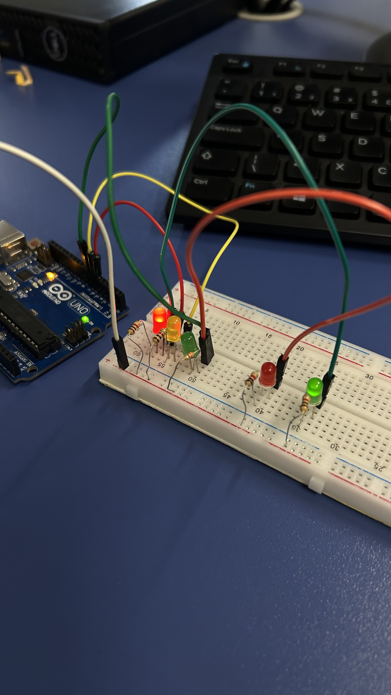
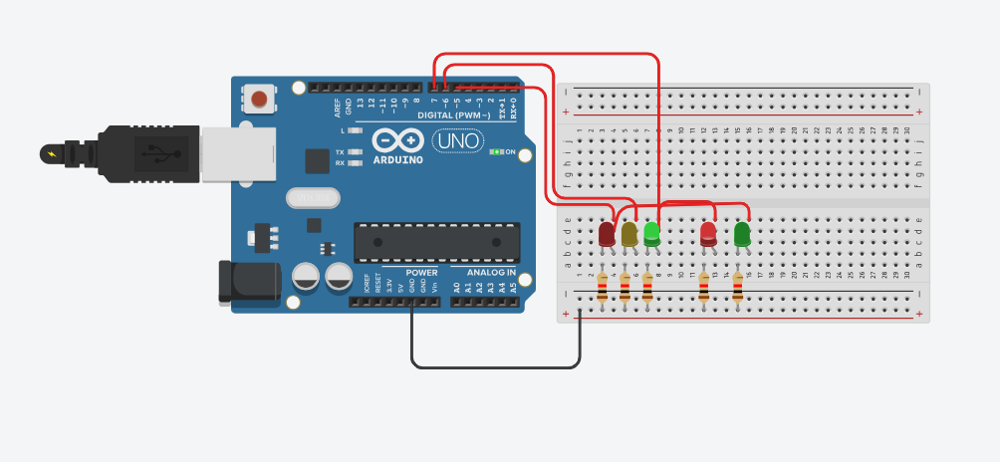
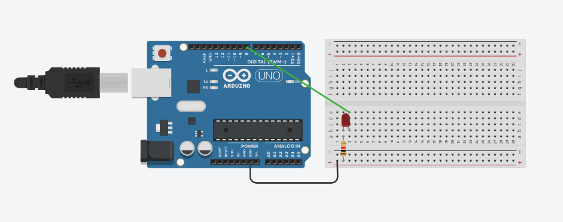

Não informadas.
Esse desafio envolvia um sistema de finanças, onde você poderia colocar os seus dados na dashboard (como nº do cartão, data de vencimento, o valor, e etc) e realizar o pagamento, que fica salvo no histórico. Além disso poderia também fazer o restorno do pagamento. O desafio da BP Promotora foi uma experiência única e muito diferente. O desafio reuniu coisas que não havíamos trabalhado com facilidade antes, e conseguimos entender qual que deveria ser o diferencial em uma empresa (como a latência por exemplo). Foi uma atividade muito interessante e aprendemos muitos conceitos técnicos e como solucionar problemas. As linguagens de programação utilizadas foram JavaScript, React e Node.JS.
Link do repositório
.png)
.png)
.png)


Competência: Propiciar o desenvolvimento de capacidades técnicas e socioemocionais relativas às atividades do técnico em desenvolvimento de sistemas impactadas pela tecnologia da internet das coisas. Habilidades: Reconhecer especificações técnicas e paradigmas do conceito de internet das coisas; 2. Integrar dispositivos para coleta automática de dados em sistemas industriais; 3. Integrar dispositivos de comunicação de dados; 4. Reconhecer especificações técnicas de sensoriamento e parametrização de robôs.
Para esta atividade, primeiro montamos o protótipo na plataforma do Tinkercad, desta forma conseguimos visualizar onde cada item se encaixava e simular seu funcionamento. Na prática do led piscando e do semáforo ainda aproveitamos para programar para que ele apagasse e acendesse através da linguagem C++. Após fazermos a simulação e programarmos, utilizamos o Arduíno no computador para que ele se conectasse com o hardware e dessa forma o led funcionasse. A experiência foi marailhosa e enriquecedor. Esse primeiro contato com C++ foi uma mudança de chaves e algo inovador, pois nunca havia programado antes e tive uma ótima experiência. Além de que, ver a programação ganhando vida no físico, foi ótimo para entender melhor o funcionamento das coisas.
Atividades do 3º Trimestre estarão disponíveis em breve.